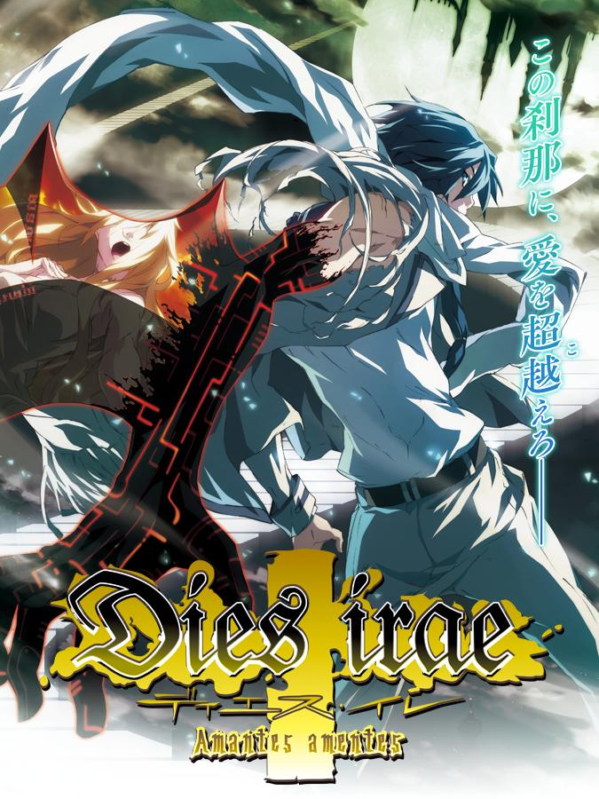

Dies irae ~Amantes amentes~
Dies irae ~Amantes amentes~
Details
|  | |
| Playtime | Not Played |
| Last Activity | Never |
| Added | 15/04/2020 |
| Modified | Never |
| Completion Status | Not Played |
| Source | Steam |
| Platform | PC |
| Release Date | 02/06/2017 |
| Community Score | 79 |
| Critic Score | |
| User Score | |
| Genre | Adventure |
| Developer | light |
| Publisher | views Co., Ltd |
| Feature | Single Player |
| Links | PCGamingWiki Community Hub Discussions Guides Store Page News |
Description
The common part scenario can be played as a basic free of charge.
In order to play each heroine scenario, purchase of DLC is required separately.
Dies irae is an immensely popular Japanese visual novel.
Ever since its initial release in 2007, the game has sold over 100 thousand copies domestically, with new fans being drawn to it every passing year.
In 2015, a Japanese crowdfunder was conducted for an anime version of Dies irae.
It successfully raised over 30 million yen less than 24 hours after it began.
The anime is currently in-production, and scheduled to begin airing in 2017.
Of course, there are plans to air the anime in North America as well.
The game contains a dark and rich atmosphere, characters with twisted personalities, poetic and sophisticated dialogue, and heart-poundingly thrilling battles.
Every single one of these aspects are finely-tuned.
Dies irae also has a splendid cast of voice actors, many of them legends amongst anime fans the world over.
Naturally, many fans have also been feverishly drawn to the story and its ride of thrills.
Story
May 1, 1945- Germany.On the eve of Berlin's collapse, a group of men and women carried out a certain ritual. To them, suffering defeat in the war meant nothing. If anything, the countless lives lost in the battle served as a catalyst to their sacrificial ceremony. Whether or not their attempt bore fruit ― not a soul knows. Following the war, they faded from sight, mind, and eventually into the realm of myth.
・・・・・・・・・・・・
61 years later ― Japan, 2006.
Ren Fujii, a young man attending high school in Suwahara City, finds his friendship with his old buddy Shirou Yusa shatter to pieces following a certain incident, ending in a vicious fight that sees Ren hospitalized for two months.
The season shifts from autumn to winter ― to the dawning weeks of December, with Christmas on the horizon. Having lost his best friend, Ren leaves the hospital with the intention to rebuild his new life without Shirou.
But even that plan soon falls apart. Irrationality that defies the realm of common sense begins to assault and devour the city. Abnormalities soon seek to destroy everything Ren holds dear before his eyes with overwhelming violence.
He must change, even if it means crossing the boundary between the ordinary and the extraordinary. His desires are hardly anything grand. All he wants is to return to those days of old. Back to those days filled with simple, everyday joy.
The battle with the Longinus Dreizehn Orden. A continuation of that war full of madness, carnage, and maledictions. What future awaits Ren at the end of his road...?
In order to play each heroine scenario, purchase of DLC is required separately.
Dies irae is an immensely popular Japanese visual novel.
Ever since its initial release in 2007, the game has sold over 100 thousand copies domestically, with new fans being drawn to it every passing year.
In 2015, a Japanese crowdfunder was conducted for an anime version of Dies irae.
It successfully raised over 30 million yen less than 24 hours after it began.
The anime is currently in-production, and scheduled to begin airing in 2017.
Of course, there are plans to air the anime in North America as well.
The game contains a dark and rich atmosphere, characters with twisted personalities, poetic and sophisticated dialogue, and heart-poundingly thrilling battles.
Every single one of these aspects are finely-tuned.
Dies irae also has a splendid cast of voice actors, many of them legends amongst anime fans the world over.
Naturally, many fans have also been feverishly drawn to the story and its ride of thrills.
Story
May 1, 1945- Germany.On the eve of Berlin's collapse, a group of men and women carried out a certain ritual. To them, suffering defeat in the war meant nothing. If anything, the countless lives lost in the battle served as a catalyst to their sacrificial ceremony. Whether or not their attempt bore fruit ― not a soul knows. Following the war, they faded from sight, mind, and eventually into the realm of myth.
・・・・・・・・・・・・
61 years later ― Japan, 2006.
Ren Fujii, a young man attending high school in Suwahara City, finds his friendship with his old buddy Shirou Yusa shatter to pieces following a certain incident, ending in a vicious fight that sees Ren hospitalized for two months.
The season shifts from autumn to winter ― to the dawning weeks of December, with Christmas on the horizon. Having lost his best friend, Ren leaves the hospital with the intention to rebuild his new life without Shirou.
But even that plan soon falls apart. Irrationality that defies the realm of common sense begins to assault and devour the city. Abnormalities soon seek to destroy everything Ren holds dear before his eyes with overwhelming violence.
He must change, even if it means crossing the boundary between the ordinary and the extraordinary. His desires are hardly anything grand. All he wants is to return to those days of old. Back to those days filled with simple, everyday joy.
The battle with the Longinus Dreizehn Orden. A continuation of that war full of madness, carnage, and maledictions. What future awaits Ren at the end of his road...?